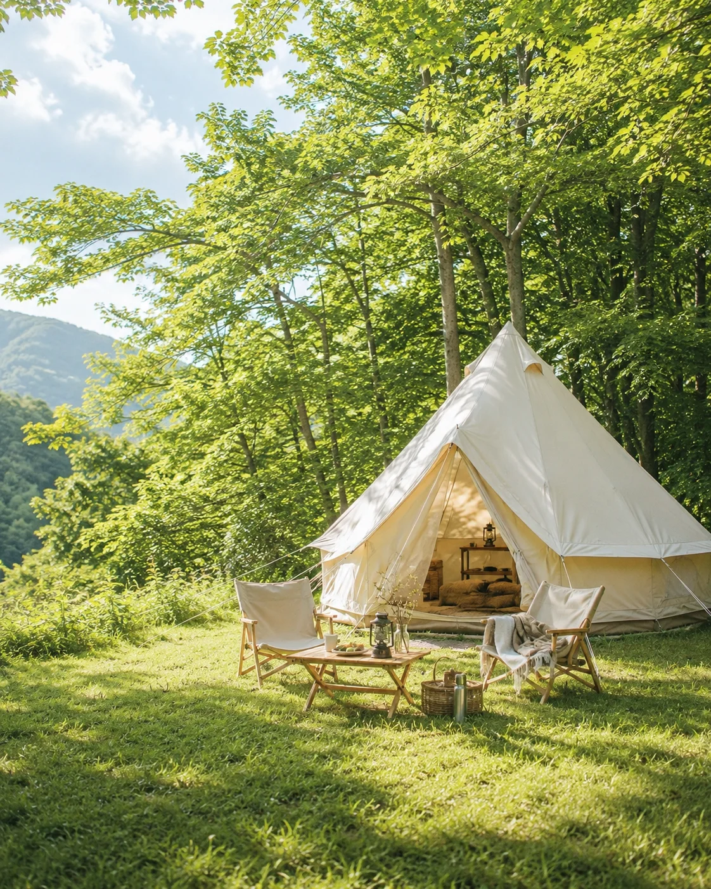
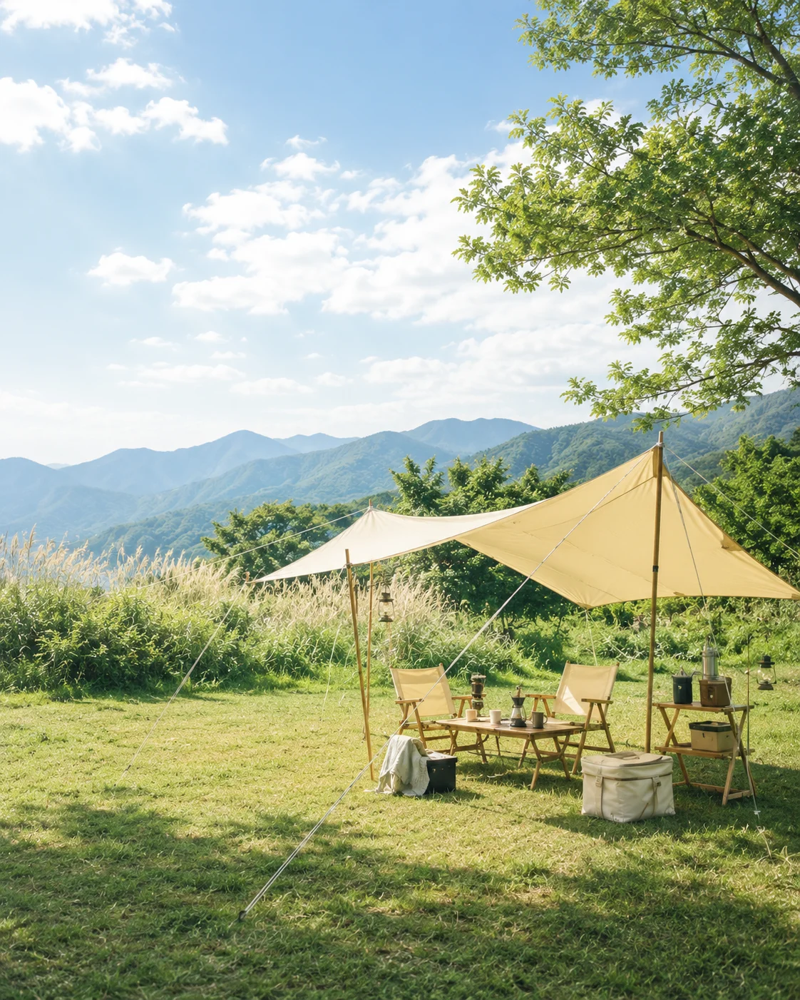

Yuruicamp Journal
從日常走進自然
在風景、旅程、器物與火光之間，閱讀屬於戶外生活的片刻。
住 / STAY
住進樹影與晨霧之間
從日常拾起一片光景
風也輕輕搖曳著葉子的呼吸

行 / JOURNEY
由山出發
循著腳步慢慢走遠
海浪輕拍每一段旅程
遊 / CAMP
在草木與天際線之間逗留
帳幕隨著季節輕輕搖晃
感受一整段時間的流轉

裝 / GEAR
行囊陪伴每一段旅程
盛裝走進自然所需的器物
也為旅途留一處家的位置
食 / FOOD
炊煙緩緩升起
香氣繚繞在暮色中
火光在此起彼落的笑語間閃爍
目前沒有符合條件的文章